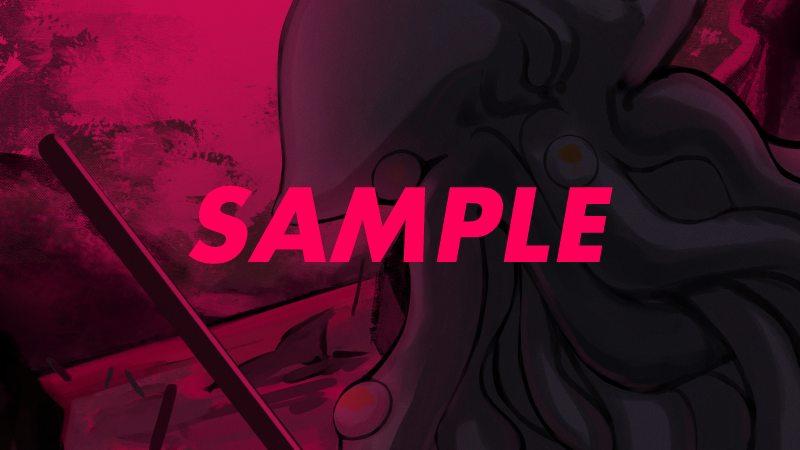

佐斯-奧莫格基本上會在右端中心部登場。請參照圖片。
若此時該處有探索者，便會對該探索者發動壓碾擲骰。
與移動時的拖拽不同，這是被捲入從水中現身的形式，因此傷害僅為 2d6。但視為突襲，故無法迴避。
佐斯-奧莫格除了會移動之外，每受到一次攻擊就會回復 3 點HP。
此外，此時深潛者與鯊魚預計也已減少，因此追加 3～4 隻左右的鯊魚會比較好（看運氣的話會被克蘇魯的觸手清掉）。
就這樣，在魚人之母（父）沉入海中之時。
海中，又一場異變降臨。
新出現的鯊魚群。然而在其深處，更有著不該被看見的、破曉的巨軀。
滑溜地，自海面的平靜中驟然挺立而起的，是一顆爬蟲類般形狀的頭顱。
從那裡延伸出圓錐狀、蠕動扭曲的肉塊，更從其表面，無數帶著吸盤的觸腕翻湧而出。
赤紅、漆黑，而最重要的是深深蘊藏著深海之青，那滑膩黏濕的手臂與軀體大幅震動著。
那正是，曾將無數人類貶入死亡的殘虐海中怪物。
那是，將臨的拉萊耶之主的兒子——佐斯-奧莫格。
你們將把神話本應有的姿態，深深烙印在自己眼中。

艾瑪：「…………！」
艾瑪：「啊啊，真是久違的邂逅啊。」
艾瑪：「跨越漫長歲月，你一直在等待與父親一同昇起的那一天嗎。」
艾瑪：「告全體【神話殲滅機關 阿爾克那】機關員！ 那曾經是襲擊倫敦的猛威之一！ 是屠戮了數百、數千、數萬民眾的鏖殺之徒！」
艾瑪：「——【原初阿爾克那】傾盡全力，將其殲滅！」
就【神話殲滅機關 阿爾克那】記錄所載，這是與佐斯-奧莫格時隔約 90 年的邂逅。
〈SAN 檢定〉1d6/1d20【佐斯-奧莫格】
SAN 值歸零者需擲
〈藝術：魅力〉。
※與大袞、海德拉時相同。
〇依〈藝術：魅力〉結果而定的 SAN 值及隊員減少值
成功～大成功 ：
減少值減半。減輕的部分以隊員數扣抵。SAN 值與隊員若會變成負數也照樣繼續減少。
決定性成功（2～5）：
減少值取 3 分之 1。減輕的部分以隊員數扣抵。SAN 值與隊員若會變成負數也照樣繼續減少。
計算式➡ c［SAN 的減少值/3］（※1）
決定性成功（1） ：
減少值歸零，所有數值皆由隊員代為承擔。SAN 值與隊員若會變成負數也照樣繼續減少。
失敗 ：
依原本的 SAN 值減少量如實扣減。若會變成負數也照樣繼續減少。
致命失敗（96～99）：
扣減原本 SAN 值減少量＋1 的 SAN 值。若會變成負數也照樣繼續減少。
致命失敗（100） ：
扣減原本 SAN 值減少量＋1d3 的 SAN 值。若會變成負數也照樣繼續減少。
※1：［］請刪除後再送出。實際圖示為「cSAN 的減少值/3」。
〇關於發狂處理
SAN 值歸零的 PC，進行永久性發狂處理。
暫時性發狂及長期性發狂（不定的瘋狂）的情況，可用〈精神分析〉治療（SAN 值不會回復）。
然而，發作永久性瘋狂的探索者，〈精神分析〉對其無效，在透過【審判】暫時解除發狂之前，將無法進行任何行動。
以【審判】回復的情況下，可暫時重返戰線（但不代表喪失被翻盤）。
尚未進入不定狀態的探索者進行暫時性發狂處理，發狂時由 KP 方
成長〈原初阿爾克那〉或〈克蘇魯神話〉，在解除發狂前，〈SAN 檢定〉以外的所有技能值附加 －20% 的修正。
若【審判】發狂，則【審判】探索者本回合的手番行動固定為〈原初阿爾克那〉。
當然，被賦予天賦〝望鄉〟的探索者若尚未使用此能力，在此使用也沒有問題（甚至這恐怕正是最佳使用時機）。
佐斯-奧莫格的進行
佐斯-奧莫格會朝著總統閣下的方向進行。
途中若有探索者，便對途中所有探索者造成無法〈迴避〉的［5d6］傷害。僅〝隱密〟狀態的探索者不受攻擊。
途中，若接觸範圍內有探索者，在未被吊起的情況下會一邊攻擊一邊前進。
移動為固定 CCB<=100，而非［DEX*5］。只要不擲出 100，基本上移動 5～6 格（擲出 100 時為 4 格）。擲出決定性成功時移動 7 格（擲出 1 時為 8 格）。
佐斯的移動殺意稍高，刻意選擇用來拖拽探索者們的路線也無妨。
佐斯被「克蘇魯邪神像（原初阿爾克那的祕寶）」所吸引，因此對持有〝原初阿爾克那〟的探索者也會多少表現出反應。
〈原初阿爾克那〉or〈克蘇魯神話〉
沉眠於你們之中的【原初阿爾克那】告知著。那簡直可稱為本能之物。
那是，正在重生的神性。被撕裂的軀體在空中飛舞，而後又再度被縫合。
無限復甦的它，邊受傷邊癒合，隨著父親的甦醒，與【原初阿爾克那】達成了邂逅。
你們感覺到地面在震顫。
這震動的真面目究竟是什麼，你們知道那是無法以目測判斷的。
那是聲音。強大的海之聲在四周回蕩，撼動著地面。
自名為深淵的海底，呼喚著這邊的聲音，彷彿正迫不及待地，向你們質問甦醒之時。
聽見克蘇魯呼聲的探索者們，發生理智檢定。
〈SAN 檢定〉1d6/1d10【克蘇魯的呼聲】
SAN 值歸零者需擲
〈藝術：魅力〉。
處理內容與
佐斯-奧莫格的出現時相同。
但此場景中，在〈藝術：魅力〉處理後，會發動來自克蘇魯的攻擊。
此時的發狂狀況影響甚大，請務必注意。
〈SAN 檢定〉與〈藝術：阿爾克那〉處理後，發生「克蘇魯的氣息」事件。
克蘇魯的氣息
——聽見了聲音。震顫了。大地搖晃。
海水裂開。腳下，啪地裂了開來。
反射性地抽身退後。揚起波浪的，是那彷彿能輕易吞下人身之物。
KP 資訊：克蘇魯的氣息之骰子處理
探索者全員（※）擲以下骰子。
① 位於中心線右側範圍的探索者 〈迴避〉
② 位於含中心線的左側範圍且在初始範圍外的探索者 〈迴避〉－20
③ 位於初始範圍內的探索者 〈迴避〉/2＋5（若〈迴避〉－20 更低則取〈迴避〉－20）
※〝隱密〟狀態的探索者無需擲骰，〝煌煌〟狀態的探索者無負向修正。
若【倒吊人】正在進行〝吊起〟，則無法〈迴避〉。
另外，若已賦予【皇帝】，則先計入負向修正後再計入正向修正。
〝救濟〟亦可使用。此外，〝戀人〟可互相重擲骰子。
發狂中的探索者在上述基礎上再附加 －20 修正。最低值為［1］。
此處的〈庇護〉可在擲出傷害骰後再判斷。
由於是回合結束時的特殊處理，不受回合中〈迴避〉次數限制，可讓全員挑戰。
但需考量上述「※」欄的阿爾克那狀況。
另外，③的〈迴避〉/2＋5 中的「＋5」部分，是初始範圍內〝原初阿爾克那的祕寶〟所帶來的增益。
PL 開示用的內容於下方準備了複製框。
━━━━━━━━━━━━━━━━━━━━━━━━━
✦ 克蘇魯的呼聲：特殊〈迴避〉處理
探索者全員（※）擲以下骰子。
① 位於中心線右側範圍的探索者 〈迴避〉
② 位於含中心線的左側範圍且在初始範圍外的探索者 〈迴避〉－20
③ 位於初始範圍內的探索者 〈迴避〉/2（若〈迴避〉－20 更低則取〈迴避〉－20）
※〝隱密〟狀態的探索者無需擲骰，〝煌煌〟狀態的探索者無負向修正。
【倒吊人】正在進行〝吊起〟時，無法〈迴避〉。
另外，若已賦予【皇帝】，則先計入負向修正後再計入正向修正。
〝救濟〟亦可使用。此外，〝戀人〟可互相重擲骰子。
發狂中的探索者在上述基礎上再附加 －20 修正。最低值為［1］。
※本回合已進行〈迴避〉的探索者，也可進行此〈迴避〉擲骰。
━━━━━━━━━━━━━━━━━━━━━━━━━
copy completed
——伴隨著彷彿要
抉開腳下的衝擊，一條遠超人體的巨大觸腕飛竄而出。
它橫掃你們周遭的人類，逃避不及的你們的存在，也被沉入它自身的漆黑之中。
對①〈迴避〉失敗的探索者造成［11d6］傷害
對②〈迴避〉－20 失敗的探索者造成［10d6］傷害
對③〈迴避〉/2 失敗的探索者造成［9d6］傷害
此處①～③的骰子僅個別擲一次（並非每位探索者各自擲骰）。
在各自扣減 HP、進行減傷或使用【節制】之前，先穿插以下描寫。
面對緊急事態，一步躍出的艾瑪高舉起盾牌。
艾瑪：「哈啊啊啊啊啊啊啊啊啊啊！！」
轟鳴與爆風。即便無法承擔全部的衝擊，那道光芒亦傾注至遠處之人身邊。
探索者們
每消耗 5 點 MP，便減少 1 個傷害骰（※1）。
※1：若骰子結果為「9d6 (9D6) ＞ 24[2,1,1,5,3,6,3,1,2] ＞ 24」，則從後方的骰子開始減少。
此情況下，若設定消耗 MP 5*3＝15，則減免 3 顆骰子，後方的「3,1,2」消失，實際承受的傷害為「2,1,1,5,3,6」合算的「18」。
處理到此後，由具〈庇護〉權利的探索者〈庇護〉範圍內的隊友，或由持盾組進行自身的減傷，二擇其一進行選擇。
只要算出減傷值，全員的傷害計算便告完成，若要使用【節制】則進行該處理。
關於此〈庇護〉【節制】，也與〈迴避〉相同，由於是特殊處理，無需計入本回合的使用狀況。
另外，關於〈迴避〉的決定性成功・致命失敗，此處無法反擊＋若因致命失敗而承受雙倍骰子，後果將不止於身體被轟飛，因此作為特殊規則，依下列方式處理。
〇決定性成功
【2～5】：
回復［1］點 MP。
【1】 ：
回復［1d3］點 MP。
〇致命失敗
【96～99】：
受到傷害＋［1］。此傷害在減少骰子的處理中優先被減免。（※2）
【100】 ：
受到傷害＋［1d3］。此傷害在減少骰子的處理中優先被減免。（※2）
※2：致命失敗狀態下，使用消耗 MP 減少傷害骰時的範例如下。
若骰子結果為「9d6 (9D6) ＞ 34[3,2,5,6,6,3,1,2,6] ＞ 34」，致命失敗【96～99】則追加＋［1］，【100】則追加＋［1d3］。
若設定消耗 MP 5，則減免 1 顆骰子，但致命失敗部分的傷害會優先處理。
因此兩者皆會如實承受「9d6 (9D6) ＞ 34[3,2,5,6,6,3,1,2,6] ＞ 34」的傷害。
若設定消耗 MP 5*2＝10，則減免 2 顆骰子，因此除致命失敗部分的傷害「1 或 1d3」外，最後方的「6」也會被減免。
此情況下，實際承受的傷害為「3,2,5,6,6,3,1,2」合算的「28」。
〈靈感〉
佐斯-奧莫格的前進方向，是你們的本陣。
那裡有著，艾瑪·艾比所持有的〝原初阿爾克那的祕寶〟。
他所瞄準的正是，作為你們力量之源的那件祕寶。
你們知道。
那是 100 年前，從浮上的拉萊耶中被奪走的、以〝克蘇魯邪神像〟為原型所創造出的神器。
身為拉萊耶守衛之子的他，瞄準它可說是理所當然。
當佐斯-奧莫格抵達初始配置區域，或被擊倒時，便轉入克蘇魯出現事件。